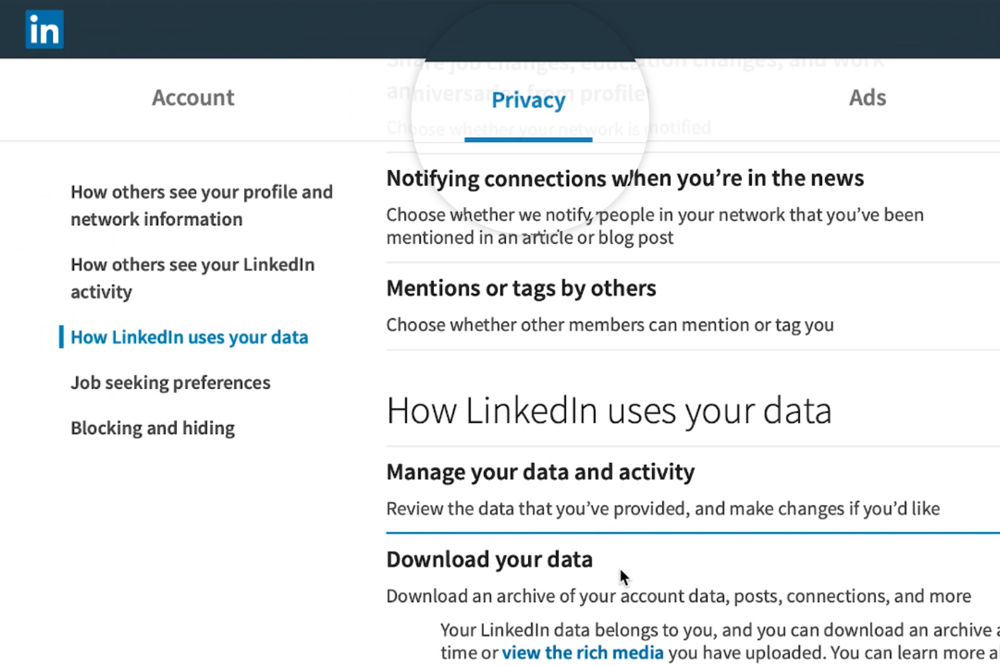

Connect with LinkedIn
Click the Go to LinkedIn button below. This would take you to your LinkedIn Data page where you may be asked to login. Navigate to 'Privacy' Tab.

Request your Data
Under the 'Download your Data' Section, Select 'Connections'. Then click the 'Request Archive' Button and type in your password if prompted. LinkedIn will then send you an email when your file is ready.

Download your Data
When you receive your email, Click on the required link where you will be redirected back to the Download your connections data page in LinkedIn. Click the 'Download Archive' button and download your data file and Upload it below
Drag and drop your CSV or Click here to select

Drag and drop your CSV or Click here to select